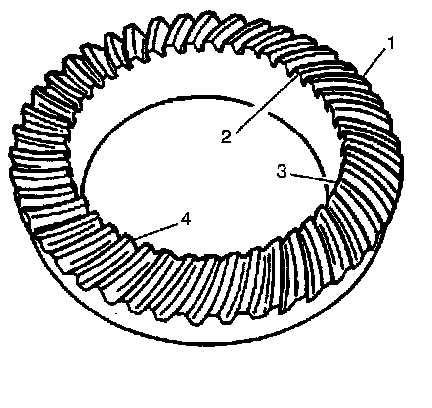
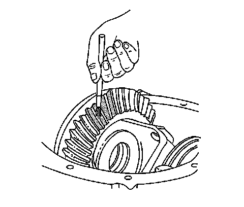
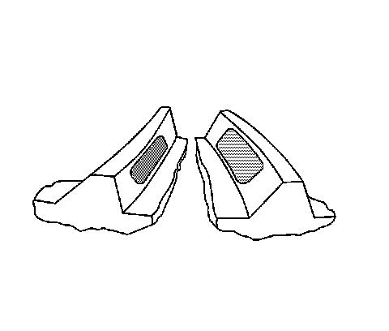
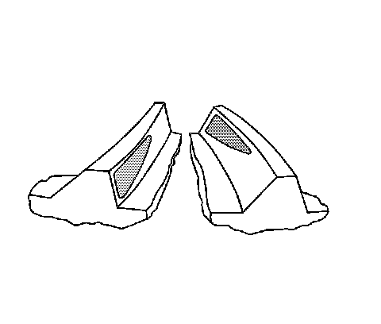
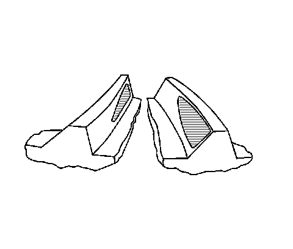
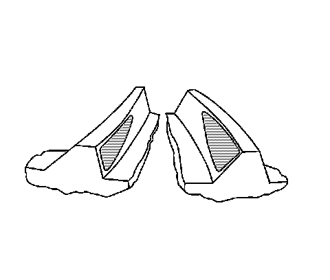
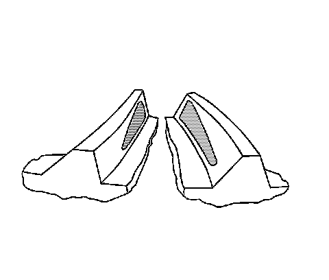
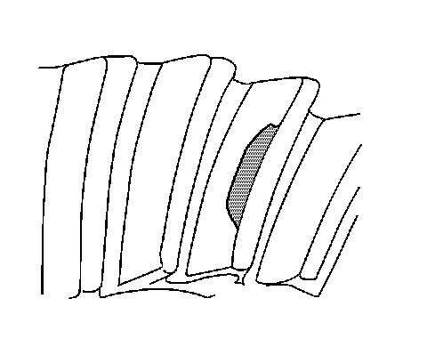
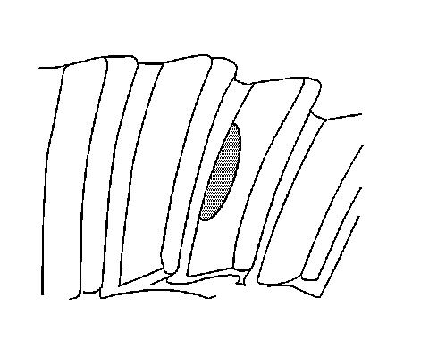

Gear Tooth Contact Pattern Inspection
Gear Tooth Contact Pattern Inspection
The gear contact pattern check is not a substitute for adjusting the pinion depth and backlash. Use this method in order to verify the correct running position of the ring gear and the drive pinion. Gear sets which are not positioned properly may be noisy and/or have a short life span. A pattern check ensures that when best contact has been obtained between the ring gear and the drive pinion, the system will produce low noise and have a long life.
Drive Pinion and Ring Gear Identification
Production drive pinion and ring gears are manufactured by using a 2-cut or a 5-cut method. The 2-cut drive pinions and ring gears can be identified by having a groove cut into the outside edge of the ring gear and a ring on the stem of the drive pinion. The gear tooth contact patterns that are produced from each style of gear set differ slightly. A 2-cut gear will produce a pattern that is bias from the toe to the heel of the tooth (drive side), while a 5-cut gear set will produce a square pattern from the toe to the heel of the tooth (drive side). When diagnosing the gear tooth contact pattern, regardless of what type of gear set it is, a correct pattern will be centered within the area of the tooth, from toe to heel and from top to bottom.
Gear Tooth Nomenclature
Gear Tooth Nomenclature:

The side of the ring gear tooth which curves outward, or is convex, is the drive side (4). The concave side is the coast side (3). The end of the tooth nearest the center of the ring gear is the toe end (2). The end of the tooth farthest away from the center is the heel end (1).
Adjustments Affecting Tooth Contact
The following 2 adjustments affect the tooth contact pattern:
^ Backlash adjustment
^ Pinion depth adjustment
The effects of bearing preloads are not readily apparent on hand-loaded tooth contact pattern tests. However, bearing preloads should be within specifications before proceeding with backlash and pinion depth adjustments.
Backlash Adjustment
The backlash can be adjusted by either varying the thickness of the side bearing shims from side to side or by moving the adjuster sleeve(s) in or out, or both. By adjusting the shim thickness or moving the adjuster sleeve(s), the case and ring gear assembly will move closer to or further away from the pinion. In most cases, adjusting the backlash will correct an abnormal contact pattern. This adjustment will also be used to set the side bearing preload.
^ If the thickness of the right shim is increased or the adjuster sleeve is moved in (if applicable), along with an equal decrease in the thickness of the left shim or the adjuster sleeve is moved out (if applicable), the backlash will increase.
^ If the thickness of the left shim is increased or the adjuster sleeve is moved in (if applicable), along with an equal decrease in the thickness of the right shim or the adjuster sleeve is moved out (if applicable), the backlash will decrease.
Pinion Depth Adjustment
Adjust the position of the pinion by increasing or decreasing the distance between the pinion head and the centerline of the ring gear. Decreasing the distance moves the pinion closer to the centerline of the ring gear. Increasing the distance moves the pinion farther away from the centerline of the ring gear.
Testing Procedure
1. Wipe clean the differential case, the ring gear and the axle housing of lubricant. Carefully clean each tooth of the ring gear.

2. Use a medium stiff brush in order to sparingly apply gear marking compound, GM P/N 1052351 (Canadian P/N 10953497) or equivalent, to all of the ring gear teeth.
3. Torque the bearing caps bolts to specification.
Important: Performing a test without loading the gears will not produce a satisfactory pattern.
4. Apply the park brake until a torque load of 14 Nm (10 lb ft) is required in order to turn the pinion.
Important: Avoid turning the ring gear excessively.
5. Using a wrench, turn the drive pinion flange/yoke so that the ring gear rotates 3 full revolutions.
6. Turn the drive pinion flange/yoke in the opposite direction so that the ring gear rotates 3 full revolutions in the opposite direction.
7. Observe the pattern on the ring gear teeth. Compare the pattern with the following illustrations.
Correct Contact Pattern
Condition
Correct Contact Pattern:

The backlash and pinion depth is correct.
Correction
None required.
Service Hints
Loose bearings on the drive pinion or in the differential case may cause patterns that vary. If the contact pattern varies, inspect the following preload settings:
^ Total assembly
^ Differential case
^ Pinion
If these settings are correct, inspect for damage or incorrectly assembled parts.
Drive Side Heel - Coast Side Toe Contact Pattern
Drive Side Heel - Coast Side Toe Contact Pattern:

Condition
The backlash is incorrect. The ring gear is too far away from the pinion.
Correction
Decrease the backlash. Move the ring gear closer to the pinion by adjusting the side bearing shim thickness or the adjuster sleeve(s). Refer to Backlash Adjustment.
Drive Side Toe - Coast Side Heel Contact Pattern
Drive Side Toe - Coast Side Heel Contact Pattern:

Condition
The backlash is incorrect. The ring gear is too close to the drive pinion.
Correction
Increase the backlash. Move the ring gear away from the pinion by adjusting the side bearing shim thickness or the adjuster sleeve(s). Refer to Backlash Adjustment.
Drive Side Heel - Coast Side Heel Contact Pattern
Drive Side Heel - Coast Side Heel Contact Pattern:

Condition
The backlash is incorrect. The ring gear is too far away from the pinion.
Correction
Decrease the backlash. Move the ring gear closer to the pinion by adjusting the side bearing shim thickness or the adjuster sleeve(s). Refer to Backlash Adjustment.
Drive Side Toe - Coast Side Toe Contact Pattern
Drive Side Toe - Coast Side Toe Contact Pattern:

Condition
The backlash is incorrect. The ring gear is too close to the drive pinion.
Correction
Increase the backlash. Move the ring gear away from the pinion by adjusting the side bearing shim thickness or the adjuster sleeve(s). Refer to Backlash Adjustment.
High Flank Contact Pattern
High Flank Contact Pattern:

Condition
The pinion depth is incorrect. The pinion gear is too far away from the ring gear.
Correction
Increase the pinion depth. Move the pinion gear closer to the ring gear by increasing the pinion shim thickness. Refer to Pinion Depth Adjustment.
Low Flank Contact Pattern
Low Flank Contact Pattern:

Condition
The pinion depth is incorrect. The pinion gear is too close to the ring gear.
Correction
Decrease the pinion depth. Move the pinion gear away from the ring gear by decreasing the pinion shim thickness. Refer to Pinion Depth Adjustment.